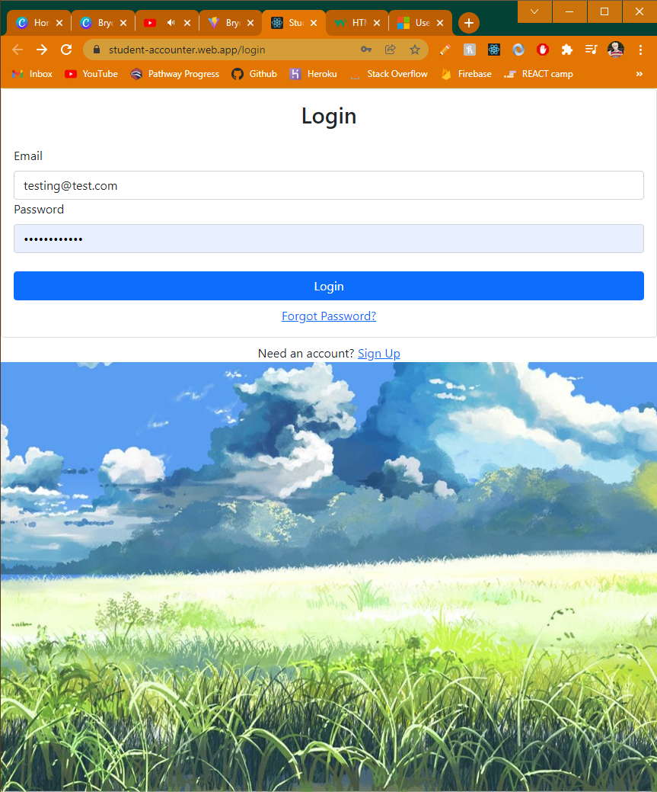
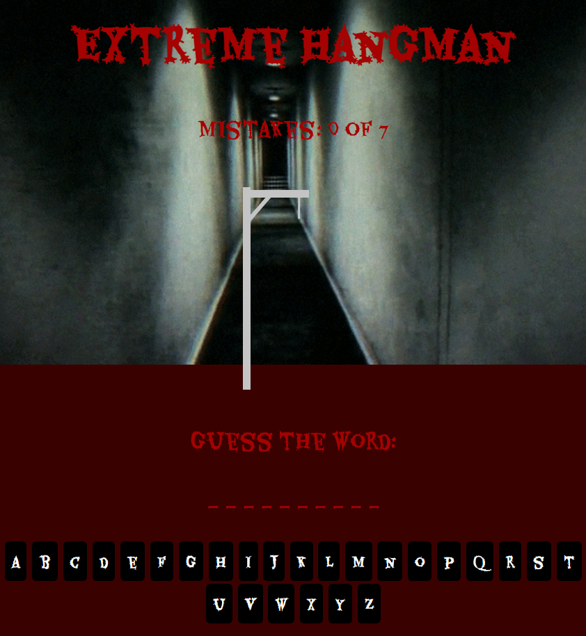
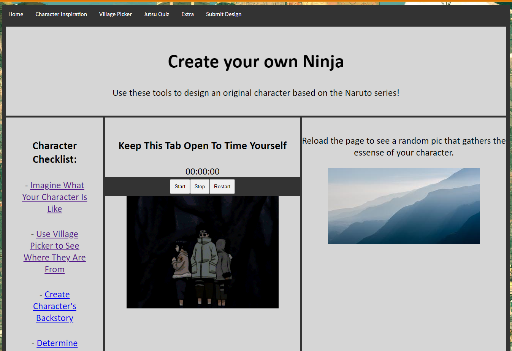

🚀 Welcome to my website!
Through part-time jobs, weekend gigs, personal projects, and months of studying, I was able to obtain my Front-End certification through CodeX Academy. I learned that with enough self-discipline, effort, and time anything is possible.

React Project
This is a React website I developed that keeps track of students and
the number of tardies they have accumulated. It is stored in a
Database and can perform all CRUD oporations. It also showcases a
Login page with many other authentication features as well.

Javascript Project
For this project, I practiced Javascript logic and how it connects to
the UI. It is a simple Hangman game that features buttons with letters
that turn blue or red depending on a correct guess. Try to guess from
a large array of intense words!

HTML Project
This HTML website has it all. I used complex CSS grids and reusable
code with SASS to create diverse web pages. Using Javascrpt I added a
stopwatch feature and a picture that makes an api call and displays on
the front page. Other features include a form page, responsive
breakpoints and a wheel that spins.
Providing front-line customer service and technical support for professors, staff, and students. Fixing general issues with computers, projectors, microphones, and soundboards. Responsible for setting up and managing audio/visual technology for on-campus events.
Scanning and editing photos. Transcribing and writing narratives from interviews. Creating promotional content.
Editing video content for a student-only run newscast. duties include in-studio interviews for the newscast, importing content from reporters and other sources, working closely with producers, and finally, directing a live newscast daily.